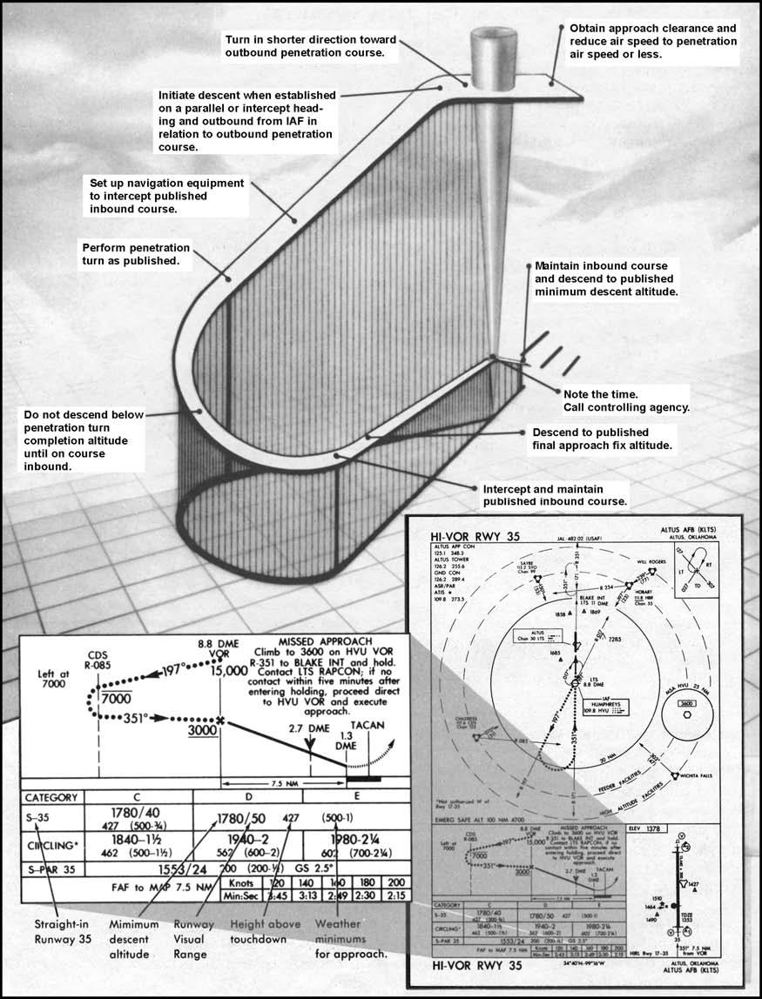
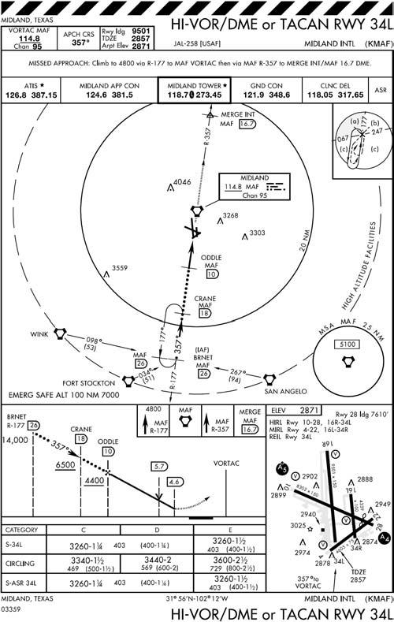
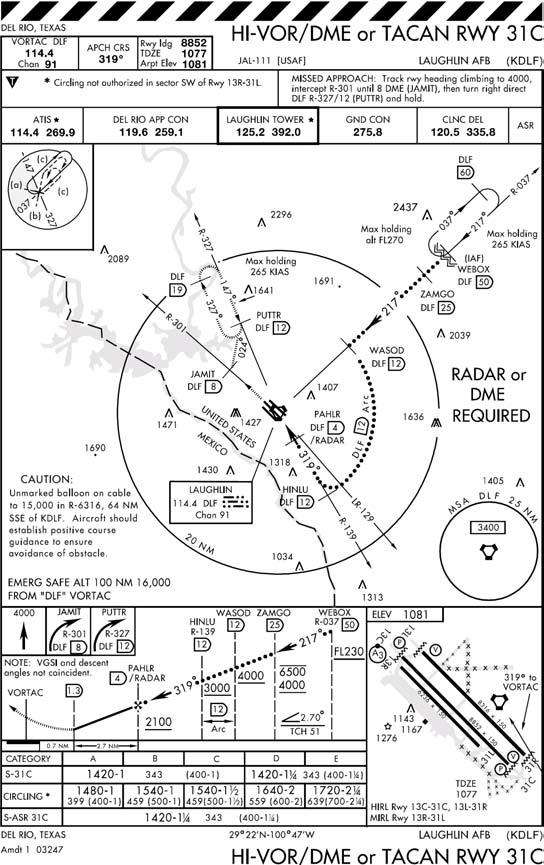
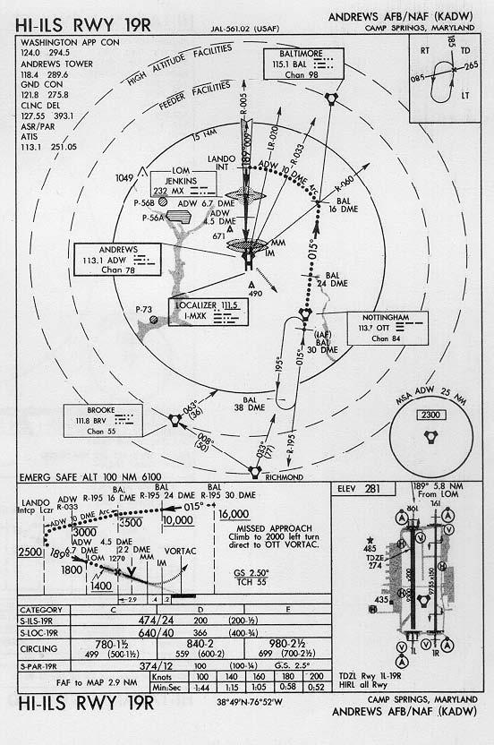
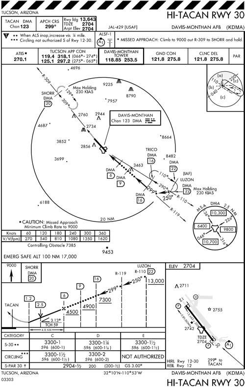

Chapter 10: HIGH ALTITUDE APPROACHES
10.1. Application.
An en route descent or a high altitude instrument approach enables an aircraft to transition from the high altitude structure to a position on and aligned with an inbound course to the FAF, at FAF altitude in the final approach configuration. ATC will usually issue a clearance for a specific type of approach. The omission of a specific type in the approach clearance indicates that any published instrument approach to the aerodrome may be used. Unless cleared by ATC to deviate, fly the entire instrument approach procedure starting at the IAF.
10.2. Non-DME Teardrop Approaches.
Teardrop approaches are usually associated with VOR or NDB facilities (Figure 10.1).
10.2.1. Station Passage. When station passage occurs at the IAF, turn immediately in the shorter direction toward the outbound course and attempt to intercept it. Begin descent when established on a parallel or intercept heading to the approach course and outbound from the IAF. If you arrive at the IAF at an altitude below that published, maintain altitude and proceed outbound 15 seconds for each 1,000 foot the aircraft is below the published altitude before starting descent. If you arrive at the IAF at an altitude above that published, a descent to the published IAF altitude should be accomplished prior to starting the approach. If descent is required at the IAF, obtain clearance to descend in a holding pattern. Set the altimeter in accordance with FLIP.
- 10.2.1.1. NOTE: Use a descent gradient of 800-1,000 ft/NM (8-10°) to ensure you remain within protected airspace.
10.2.2. Fly-off. Some approaches use a fly-off (altitude or range) restriction before starting descent. In these cases, the pilot will attempt to intercept the outbound course and comply with the altitudes depicted on the approach chart unless otherwise instructed by ATC. Since the pilot cannot be expected to determine accurate groundspeed during a constantly changing true airspeed descent, depicted range restrictions should not be shown on non-DME teardrop high altitude approaches. Penetration turns should be annotated "left or right turn at (altitude)." When a penetration turn altitude is not published, start the turn after descending one-half the total altitude between the IAF and FAF altitudes. One technique to determine the start turn altitude is to add the IAF and FAF altitudes and divide by two. Before reaching the penetration turn altitude, set up the navigation equipment to intercept the published inbound approach course. Recheck the altimeter and the direction of penetration turn.
10.2.3. Penetration Turn. Fly the penetration turn in the direction published. A 30° angle of bank is normally used during the penetration turn; however, bank may be shallowed if undershooting course. If it is apparent that you will undershoot the inbound penetration course, roll out on an intercept heading. Use normal inbound course interception procedures to intercept the course.
- 10.2.3.1. NOTE: If a penetration turn completion altitude is depicted, do not descend below this altitude until you are established on the inbound segment of the published approach procedure. Remember, obstacle clearance is based on the pilot attempting to maintain the course centerline; a pilot must use position orientation and pilot judgment to determine when to descend while attempting to intercept the course.
10.2.4. Descent. Continue descent to FAF altitude. Establish approach configuration and airspeed prior to the final approach fix unless the aircraft flight manual procedures require otherwise.
Figure 10.1. Non-DME Teardrop-High Altitude Approach.

10.3. Radial Approaches.
These approaches are associated with TACAN or VORTAC facilities (Figure 10.2). One or more radials form the entire approach track.
10.3.1. Crossing the IAF. When over the IAF, turn immediately in the shorter direction toward the approach course. Intercept the published approach course using appropriate course intercept procedures. If your heading is within 90° of the approach course, you are not required to overfly the IAF; you may use normal lead points to intercept the course.
10.3.2. Descent. Start the descent when the aircraft is abeam or past the IAF on a parallel or intercept heading to the approach course. For DME approaches, crossing the arc is considered abeam the IAF. Intercept the course and comply with the altitudes depicted on the approach chart. Aircraft configuration and airspeed requirements prior to the FAF are the same as for non-DME teardrop.
Figure 10.2. Radial - High Altitude Approach.

Figure 10.3. Radial and Arc Combination Approach.

10.4. Radial and Arc Combination Approaches (Figure 10.3).
These require the use of arc intercept procedures. Flight procedures are the same as for a radial approach. However, if established in a holding pattern and the IAF is located on an arc or on a radial at a distance less than that required for a normal lead point, you may turn early to intercept the arc. Start the descent when you are established on an intercept to the arc and abeam or past the IAF in relation to the initial approach track. Aircraft configuration and airspeed requirements prior to the FAF are the same as for non-DME teardrop. An arc or radial altitude restriction only applies while established on that segment of the approach to which the altitude restriction applies. Once a lead point is reached, and a turn to the next segment is initiated, the pilot may descend to the next applicable altitude restriction. This may be especially important to facilitate a reasonable rate of descent to final approach fix altitude.
10.4.1. NOTE: When an altitude restriction is depicted at a fix defined as an intersection of a radial and an ARC the restriction must be complied with no later than the completion of the lead turn associated with that fix. If the restriction is met during the lead turn, consider yourself established on the next segment and continue to descend to the next applicable altitude restriction.
10.5. Multiple Facility Approaches (Figure 10.4).
The multiple facility type approach normally uses a combination of two or more VORs, NDB, TACANs, etc., to provide the track.
10.5.1. Entry Procedures. The approach entry procedures are the same as prescribed for non-DME teardrop approaches.
10.5.2. Restriction. The entire approach must be flown as depicted to comply with all course and altitude restrictions. Aircraft configuration and airspeed requirements prior to the FAF are the same as for non-DME teardrop approaches.
Figure 10.4. Multiple Facility Approach.

10.6. Approach With Dead Reckoning (DR) Courses.
Many IAPs utilize DR courses (Figure 10.5). Course guidance is not available; however, the DR course should be flown as closely as possible to the depicted ground track.
10.6.1. Lead points. Use lead points for turns to and from the DR legs so as to roll out on the depicted ground track.
10.6.2. Ground track. Attempt to fly the depicted ground track by correcting for wind.
Figure 10.5. Dead Reckoning Courses.
